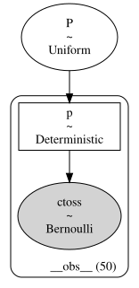
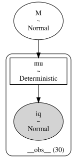
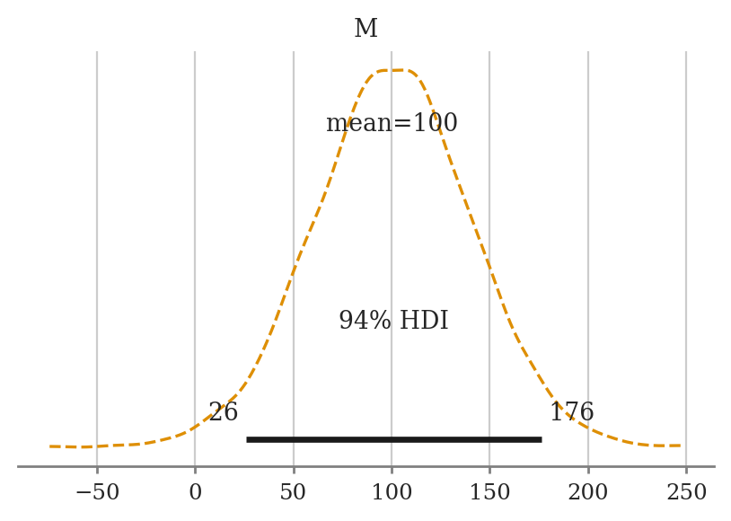
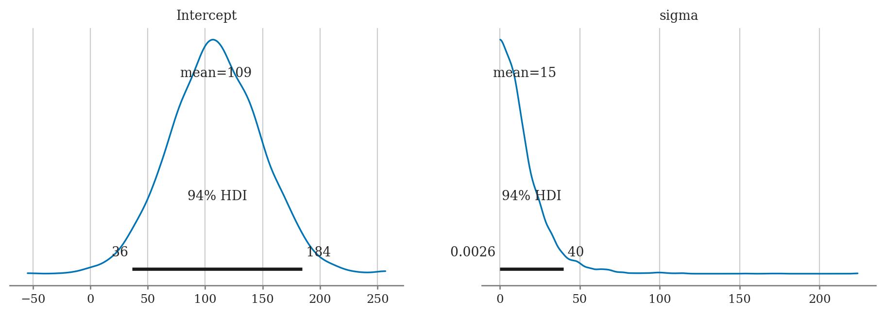
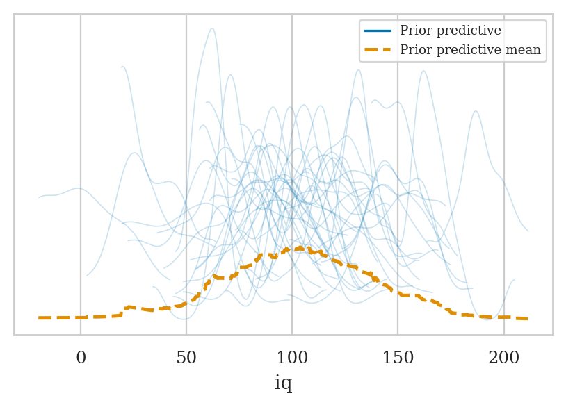
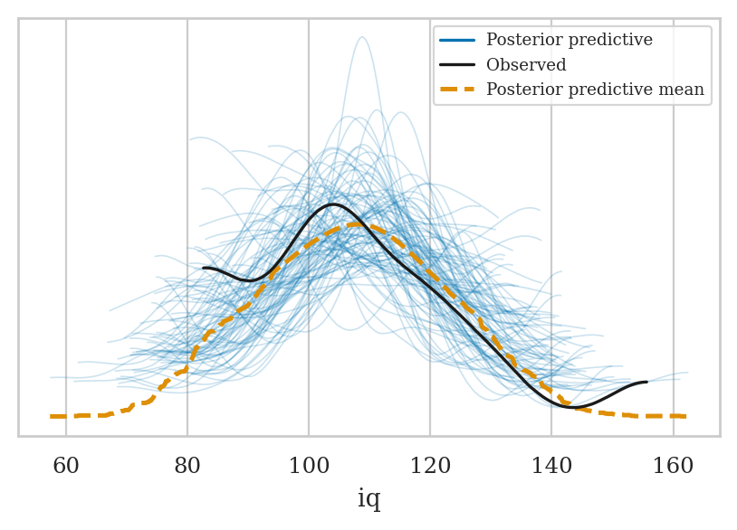
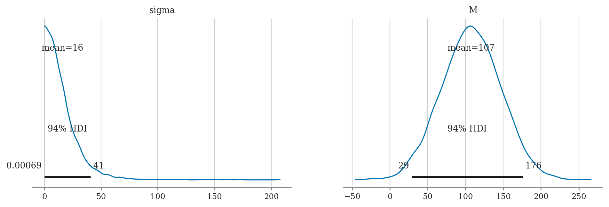
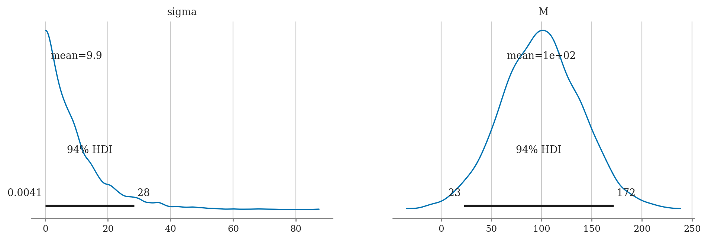

Section 5.2 — Bayesian inference computations#
This notebook contains the code examples from Section 5.2 Bayesian inference computations from the No Bullshit Guide to Statistics.
See also:
Notebook setup#
# Ensure required Python modules are installed
%pip install --quiet numpy scipy seaborn statsmodels bambi==0.15.0 pymc==5.23.0 ministats
Note: you may need to restart the kernel to use updated packages.
# Load Python modules
import numpy as np
import pandas as pd
import seaborn as sns
import matplotlib.pyplot as plt
# Figures setup
plt.clf() # needed otherwise `sns.set_theme` doesn't work
sns.set_theme(
context="paper",
style="whitegrid",
palette="colorblind",
rc={"font.family": "serif",
"font.serif": ["Palatino", "DejaVu Serif", "serif"],
"figure.figsize": (5,3)},
)
%config InlineBackend.figure_format = "retina"
<Figure size 640x480 with 0 Axes>
# Simple float __repr__
if int(np.__version__.split(".")[0]) >= 2:
np.set_printoptions(legacy='1.25')
Definitions#
TODO
Posterior inference using MCMC estimation#
TODO: point-form definitions
Bayesian inference using Bambi#
TODO: mention Bambi classes
import bambi as bmb
print(bmb.Prior.__doc__)
Abstract specification of a term prior
Parameters
----------
name : str
Name of prior distribution. Must be the name of a PyMC distribution
(e.g., `"Normal"`, `"Bernoulli"`, etc.)
auto_scale: bool
Whether to adjust the parameters of the prior or use them as passed. Default to `True`.
kwargs : dict
Optional keywords specifying the parameters of the named distribution.
dist : pymc.distributions.distribution.DistributionMeta or callable
A callable that returns a valid PyMC distribution. The signature must contain `name`,
`dims`, and `shape`, as well as its own keyworded arguments.
print("\n".join(bmb.Model.__doc__.splitlines()[0:27]))
Specification of model class
Parameters
----------
formula : str or bambi.formula.Formula
A model description written using the formula syntax from the `formulae` library.
data : pandas.DataFrame
A pandas dataframe containing the data on which the model will be fit, with column
names matching variables defined in the formula.
family : str or bambi.families.Family
A specification of the model family (analogous to the family object in R). Either
a string, or an instance of class `bambi.families.Family`. If a string is passed, a
family with the corresponding name must be defined in the defaults loaded at `Model`
initialization. Valid pre-defined families are `"bernoulli"`, `"beta"`,
`"binomial"`, `"categorical"`, `"gamma"`, `"gaussian"`, `"negativebinomial"`,
`"poisson"`, `"t"`, and `"wald"`. Defaults to `"gaussian"`.
priors : dict
Optional specification of priors for one or more terms. A dictionary where the keys are
the names of terms in the model, "common," or "group_specific" and the values are
instances of class `Prior`. If priors are unset, uses automatic priors inspired by
the R rstanarm library.
link : str or Dict[str, str]
The name of the link function to use. Valid names are `"cloglog"`, `"identity"`,
`"inverse_squared"`, `"inverse"`, `"log"`, `"logit"`, `"probit"`, and
`"softmax"`. Not all the link functions can be used with all the families.
If a dictionary, keys are the names of the target parameters and the values are the names
of the link functions.
Example 1: estimating the probability of a bias of a coin#
Let’s revisit the biased coin example from Section 5.1, where we want to estimate the probability the coin turns up heads.
Data#
We have a sample that contains \(n=50\) observations (coin tosses) from the coin.
The outcome 1 corresponds to heads,
while the outcome 0 corresponds to tails.
We package the data as the ctoss column of a new data frame ctosses.
ctosses = [1,1,0,0,1,0,1,1,1,1,1,0,1,1,0,0,0,1,1,1,
1,1,1,1,1,1,1,0,1,1,1,1,1,1,1,1,0,0,1,0,
0,1,0,1,0,1,0,1,1,0]
ctosses = pd.DataFrame({"ctoss":ctosses})
ctosses.head(3)
| ctoss | |
|---|---|
| 0 | 1 |
| 1 | 1 |
| 2 | 0 |
The proportion of heads outcomes is:
ctosses["ctoss"].mean()
0.68
Model#
The model is
import bambi as bmb
bmb.Prior("Uniform", lower=0, upper=1)
Uniform(lower: 0.0, upper: 1.0)
priors1 = {
"Intercept": bmb.Prior("Uniform", lower=0, upper=1)
}
mod1 = bmb.Model(formula="ctoss ~ 1",
family="bernoulli",
link="identity",
priors=priors1,
data=ctosses)
mod1.set_alias({"Intercept": "P"})
mod1
Formula: ctoss ~ 1
Family: bernoulli
Link: p = identity
Observations: 50
Priors:
target = p
Common-level effects
Intercept ~ Uniform(lower: 0.0, upper: 1.0)
mod1.build()
mod1.graph()

# mod1.backend.model
Fitting the model#
idata1 = mod1.fit(random_seed=42)
Modeling the probability that ctoss==1
Initializing NUTS using jitter+adapt_diag...
Multiprocess sampling (2 chains in 2 jobs)
NUTS: [P]
Sampling 2 chains for 1_000 tune and 1_000 draw iterations (2_000 + 2_000 draws total) took 1 seconds.
We recommend running at least 4 chains for robust computation of convergence diagnostics
Exploring InferenceData objects#
idata1
-
<xarray.Dataset> Size: 24kB Dimensions: (chain: 2, draw: 1000) Coordinates: * chain (chain) int64 16B 0 1 * draw (draw) int64 8kB 0 1 2 3 4 5 6 7 ... 993 994 995 996 997 998 999 Data variables: P (chain, draw) float64 16kB 0.7612 0.5686 0.7762 ... 0.5944 0.6632 Attributes: created_at: 2026-09-30T14:10:19.475935+00:00 arviz_version: 0.23.4 inference_library: pymc inference_library_version: 5.23.0 sampling_time: 0.9430010318756104 tuning_steps: 1000 modeling_interface: bambi modeling_interface_version: 0.15.0 -
<xarray.Dataset> Size: 252kB Dimensions: (chain: 2, draw: 1000) Coordinates: * chain (chain) int64 16B 0 1 * draw (draw) int64 8kB 0 1 2 3 4 5 ... 995 996 997 998 999 Data variables: (12/17) diverging (chain, draw) bool 2kB False False ... False False energy (chain, draw) float64 16kB 33.97 36.99 ... 33.24 tree_depth (chain, draw) int64 16kB 1 2 2 2 2 2 ... 1 2 1 1 2 2 energy_error (chain, draw) float64 16kB 0.2941 -0.4251 ... -0.3127 step_size_bar (chain, draw) float64 16kB 1.415 1.415 ... 1.332 process_time_diff (chain, draw) float64 16kB 0.0001744 ... 0.0001803 ... ... max_energy_error (chain, draw) float64 16kB 0.2941 2.003 ... -0.314 index_in_trajectory (chain, draw) int64 16kB -1 2 2 3 -3 ... 1 -1 1 1 -1 perf_counter_diff (chain, draw) float64 16kB 0.0001741 ... 0.0001803 n_steps (chain, draw) float64 16kB 1.0 3.0 3.0 ... 3.0 3.0 step_size (chain, draw) float64 16kB 1.702 1.702 ... 1.175 smallest_eigval (chain, draw) float64 16kB nan nan nan ... nan nan Attributes: created_at: 2026-09-30T14:10:19.490288+00:00 arviz_version: 0.23.4 inference_library: pymc inference_library_version: 5.23.0 sampling_time: 0.9430010318756104 tuning_steps: 1000 modeling_interface: bambi modeling_interface_version: 0.15.0 -
<xarray.Dataset> Size: 800B Dimensions: (__obs__: 50) Coordinates: * __obs__ (__obs__) int64 400B 0 1 2 3 4 5 6 7 8 ... 42 43 44 45 46 47 48 49 Data variables: ctoss (__obs__) int64 400B 1 1 0 0 1 0 1 1 1 1 1 ... 0 1 0 1 0 1 0 1 1 0 Attributes: created_at: 2026-09-30T14:10:19.495201+00:00 arviz_version: 0.23.4 inference_library: pymc inference_library_version: 5.23.0 modeling_interface: bambi modeling_interface_version: 0.15.0
type(idata1)
arviz.data.inference_data.InferenceData
idata1.groups()
['posterior', 'sample_stats', 'observed_data']
type(idata1["posterior"])
xarray.core.dataset.Dataset
list(idata1["posterior"].coords)
['chain', 'draw']
list(idata1["posterior"].data_vars)
['P']
type(idata1["posterior"]["P"])
xarray.core.dataarray.DataArray
idata1["posterior"]["P"]
<xarray.DataArray 'P' (chain: 2, draw: 1000)> Size: 16kB
array([[0.76122756, 0.56861221, 0.77616961, ..., 0.70772348, 0.62878475,
0.70789234],
[0.68937002, 0.73226925, 0.67623114, ..., 0.60182373, 0.59438488,
0.6632119 ]])
Coordinates:
* chain (chain) int64 16B 0 1
* draw (draw) int64 8kB 0 1 2 3 4 5 6 7 ... 993 994 995 996 997 998 999type(idata1["posterior"]["P"].values)
numpy.ndarray
idata1["posterior"]["P"].values.round(3)
array([[0.761, 0.569, 0.776, ..., 0.708, 0.629, 0.708],
[0.689, 0.732, 0.676, ..., 0.602, 0.594, 0.663]])
idata1["posterior"]["P"].values.shape
(2, 1000)
Extracting the samples from the posterior#
postP = idata1["posterior"]["P"].values.flatten()
postP
array([0.76122756, 0.56861221, 0.77616961, ..., 0.60182373, 0.59438488,
0.6632119 ])
Visualize the posterior#
Histogram#
ax = sns.histplot(x=postP, stat="density")
ax.set_xlabel("$p$")
ax.set_ylabel("$f_{P|\\mathbf{c}}$");

Kernel density plot#
ax = sns.kdeplot(x=postP)
ax.set_xlabel("$p$")
ax.set_ylabel("$f_{P|\\mathbf{c}}$");

Summarize the posterior#
len(postP)
2000
Posterior mean#
np.mean(postP)
0.6774457022266422
Posterior standard deviation#
np.std(postP)
0.06465710325405617
Posterior median#
np.median(postP)
0.6816845607499968
Posterior quartiles#
np.quantile(postP, [0.25, 0.5, 0.75])
array([0.63596093, 0.68168456, 0.72070423])
Posterior percentiles#
np.percentile(postP, [3, 97])
array([0.54584942, 0.79597242])
Posterior mode#
from ministats import mode_from_samples
mode_from_samples(postP)
0.6872105271863933
Credible interval#
from ministats import hdi_from_samples
hdi_from_samples(postP, hdi_prob=0.9)
[0.5677606764344124, 0.7802343628275518]
Example 2: estimating the IQ score#
Let’s return to the investigation of the smart drug effects on IQ scores.
Data#
We have collected data from \(30\) individuals who took the smart drug,
which we have packaged into the iq column of the data frame iqs.
iqs = [ 82.6, 105.5, 96.7, 84.0, 127.2, 98.8, 94.3,
122.1, 86.8, 86.1, 107.9, 118.9, 116.5, 101.0,
91.0, 130.0, 155.7, 120.8, 107.9, 117.1, 100.1,
108.2, 99.8, 103.6, 108.1, 110.3, 101.8, 131.7,
103.8, 116.4]
iqs = pd.DataFrame({"iq":iqs})
iqs["iq"].mean()
107.82333333333334
Model#
We will use the following Bayesian model:
We place a broad prior on the mean parameter \(M\), by choosing a large value for the standard deviation \(\sigma_M\). We assume the IQ scores come from a population with standard deviation \(\sigma = 15\).
import bambi as bmb
priors2 = {
"Intercept": bmb.Prior("Normal", mu=100, sigma=40),
"sigma": 15,
}
mod2 = bmb.Model(formula="iq ~ 1",
family="gaussian",
link="identity",
priors=priors2,
data=iqs)
mod2.set_alias({"Intercept": "M"})
mod2
Formula: iq ~ 1
Family: gaussian
Link: mu = identity
Observations: 30
Priors:
target = mu
Common-level effects
Intercept ~ Normal(mu: 100.0, sigma: 40.0)
Auxiliary parameters
sigma ~ 15
mod2.build()
mod2.graph()

Fitting the model#
This time we’ll generate \(N=2000\) samples from each chain.
idata2 = mod2.fit(draws=2000, random_seed=42)
Initializing NUTS using jitter+adapt_diag...
Multiprocess sampling (2 chains in 2 jobs)
NUTS: [M]
Sampling 2 chains for 1_000 tune and 2_000 draw iterations (2_000 + 4_000 draws total) took 1 seconds.
We recommend running at least 4 chains for robust computation of convergence diagnostics
Extract the samples from the posterior#
postM = idata2["posterior"]["M"].values.flatten()
len(postM)
4000
postM
array([111.84188777, 111.84188777, 110.69558723, ..., 107.81737867,
110.06495156, 108.77654813])
Visualize the posterior#
Histogram#
ax = sns.histplot(x=postM, stat="density")
ax.set_xlabel("$\\mu$")
ax.set_ylabel("$f_{M|\\mathbf{x}}$");

Kernel density plot#
ax = sns.kdeplot(x=postM)
ax.set_xlabel("$\\mu$")
ax.set_ylabel("$f_{M|\\mathbf{x}}$");

Summarize the posterior#
Posterior mean#
np.mean(postM)
107.71660366362643
Posterior standard deviation#
np.std(postM)
2.7321817530344927
Posterior median#
np.median(postM)
107.68693675071796
Posterior quartiles#
np.quantile(postM, [0.25, 0.5, 0.75])
array([105.89351247, 107.68693675, 109.56072492])
Posterior percentiles#
np.percentile(postM, [3, 97])
array([102.55117884, 112.96987424])
Posterior mode#
from ministats import mode_from_samples
mode_from_samples(postM)
107.51319922417586
Credible interval#
from ministats import hdi_from_samples
hdi_from_samples(postM, hdi_prob=0.9)
[103.09147595368688, 112.09548894571525]
Visualizing and interpreting posteriors#
import arviz as az
Example 1 continued: inferences about the biased coin#
Extracting samples (CUTTABLE)#
For the purpose of our data analysis,
we don’t care about the chain and draw information
and are only interested in in the variable P,
which are the actual samples from the posterior.
The easiest way to extract the samples from the posterior
is to use the ArviZ helper method az.extract shown below.
postP = az.extract(idata1, var_names="P").values
postP.round(3)
array([0.761, 0.569, 0.776, ..., 0.602, 0.594, 0.663])
The call to the function az.extract selected the posterior group,
then selected the variable P within the posterior group.
/CUTTABLE
Summarizing the posterior#
az.summary(idata1, kind="stats", hdi_prob=0.9)
| mean | sd | hdi_5% | hdi_95% | |
|---|---|---|---|---|
| P | 0.677 | 0.065 | 0.568 | 0.78 |
Plotting the posterior#
az.plot_posterior(idata1, var_names="P", hdi_prob=0.9);

Options:
If multiple variables, you specify a list to
var_namesto select only certain variables to plotSet the option
point_estimateto"mode"or"median"Add the option
ropeto draw region of practical equivalence, e.g.,rope=[97,103]
az.plot_forest(idata1, hdi_prob=0.9, figsize=(6,2.2));

Example 2 continued: inferences about the population mean#
Summarizing the posterior#
az.summary(idata2, kind="stats", hdi_prob=0.9)
| mean | sd | hdi_5% | hdi_95% | |
|---|---|---|---|---|
| M | 107.717 | 2.733 | 103.091 | 112.095 |
Plotting the posterior#
az.plot_posterior(idata2, var_names="M", hdi_prob=0.9);

az.plot_posterior(idata2, var_names="M", hdi_prob=0.9, kind="hist", bins=70);

az.plot_forest(idata2, combined=True, hdi_prob=0.9, figsize=(6,0.6));

Hypothesis testing#
az.plot_posterior(idata2, hdi_prob=0.95);

az.plot_posterior(idata2, hdi_prob="hide", rope=[97,103]);

Explanations#
Visualizing prior distributions#
mod2.plot_priors(random_seed=43, color="C1", linestyle="dashed");
Sampling: [M]


Bambi default priors#
iqs["iq"].mean(), iqs["iq"].std(ddof=0), 2.5*iqs["iq"].std(ddof=0)
(107.82333333333334, 15.812119472803834, 39.53029868200959)
mod2d = bmb.Model("iq ~ 1", family="gaussian", data=iqs)
mod2d
Formula: iq ~ 1
Family: gaussian
Link: mu = identity
Observations: 30
Priors:
target = mu
Common-level effects
Intercept ~ Normal(mu: 107.8233, sigma: 39.5303)
Auxiliary parameters
sigma ~ HalfStudentT(nu: 4.0, sigma: 15.8121)
mod2d.build()
mod2d.plot_priors();
Sampling: [Intercept, sigma]


More about inference data objects#
idata1
-
<xarray.Dataset> Size: 24kB Dimensions: (chain: 2, draw: 1000) Coordinates: * chain (chain) int64 16B 0 1 * draw (draw) int64 8kB 0 1 2 3 4 5 6 7 ... 993 994 995 996 997 998 999 Data variables: P (chain, draw) float64 16kB 0.7612 0.5686 0.7762 ... 0.5944 0.6632 Attributes: created_at: 2026-09-30T14:10:19.475935+00:00 arviz_version: 0.23.4 inference_library: pymc inference_library_version: 5.23.0 sampling_time: 0.9430010318756104 tuning_steps: 1000 modeling_interface: bambi modeling_interface_version: 0.15.0 -
<xarray.Dataset> Size: 252kB Dimensions: (chain: 2, draw: 1000) Coordinates: * chain (chain) int64 16B 0 1 * draw (draw) int64 8kB 0 1 2 3 4 5 ... 995 996 997 998 999 Data variables: (12/17) diverging (chain, draw) bool 2kB False False ... False False energy (chain, draw) float64 16kB 33.97 36.99 ... 33.24 tree_depth (chain, draw) int64 16kB 1 2 2 2 2 2 ... 1 2 1 1 2 2 energy_error (chain, draw) float64 16kB 0.2941 -0.4251 ... -0.3127 step_size_bar (chain, draw) float64 16kB 1.415 1.415 ... 1.332 process_time_diff (chain, draw) float64 16kB 0.0001744 ... 0.0001803 ... ... max_energy_error (chain, draw) float64 16kB 0.2941 2.003 ... -0.314 index_in_trajectory (chain, draw) int64 16kB -1 2 2 3 -3 ... 1 -1 1 1 -1 perf_counter_diff (chain, draw) float64 16kB 0.0001741 ... 0.0001803 n_steps (chain, draw) float64 16kB 1.0 3.0 3.0 ... 3.0 3.0 step_size (chain, draw) float64 16kB 1.702 1.702 ... 1.175 smallest_eigval (chain, draw) float64 16kB nan nan nan ... nan nan Attributes: created_at: 2026-09-30T14:10:19.490288+00:00 arviz_version: 0.23.4 inference_library: pymc inference_library_version: 5.23.0 sampling_time: 0.9430010318756104 tuning_steps: 1000 modeling_interface: bambi modeling_interface_version: 0.15.0 -
<xarray.Dataset> Size: 800B Dimensions: (__obs__: 50) Coordinates: * __obs__ (__obs__) int64 400B 0 1 2 3 4 5 6 7 8 ... 42 43 44 45 46 47 48 49 Data variables: ctoss (__obs__) int64 400B 1 1 0 0 1 0 1 1 1 1 1 ... 0 1 0 1 0 1 0 1 1 0 Attributes: created_at: 2026-09-30T14:10:19.495201+00:00 arviz_version: 0.23.4 inference_library: pymc inference_library_version: 5.23.0 modeling_interface: bambi modeling_interface_version: 0.15.0
type(idata1)
arviz.data.inference_data.InferenceData
idata1.groups()
['posterior', 'sample_stats', 'observed_data']
Groups are Dataset objects#
post1 = idata1["posterior"]
type(post1)
xarray.core.dataset.Dataset
# post1
post1.coords
Coordinates:
* chain (chain) int64 16B 0 1
* draw (draw) int64 8kB 0 1 2 3 4 5 6 7 ... 993 994 995 996 997 998 999
post1.data_vars
Data variables:
P (chain, draw) float64 16kB 0.7612 0.5686 0.7762 ... 0.5944 0.6632
Variables are DataArray objects#
Ps = post1["P"] # == idata1["posterior"]["P"]
type(Ps)
xarray.core.dataarray.DataArray
# Ps
Ps.shape
(2, 1000)
Ps.name
'P'
Ps.to_dataframe()
| P | ||
|---|---|---|
| chain | draw | |
| 0 | 0 | 0.761228 |
| 1 | 0.568612 | |
| 2 | 0.776170 | |
| 3 | 0.675721 | |
| 4 | 0.749423 | |
| ... | ... | ... |
| 1 | 995 | 0.639569 |
| 996 | 0.665563 | |
| 997 | 0.601824 | |
| 998 | 0.594385 | |
| 999 | 0.663212 |
2000 rows × 1 columns
Ps.values
array([[0.76122756, 0.56861221, 0.77616961, ..., 0.70772348, 0.62878475,
0.70789234],
[0.68937002, 0.73226925, 0.67623114, ..., 0.60182373, 0.59438488,
0.6632119 ]])
Ps.values.flatten()
array([0.76122756, 0.56861221, 0.77616961, ..., 0.60182373, 0.59438488,
0.6632119 ])
MCMC diagnostics#
Trace plots#
There are several Arviz plots we can use to check if the Markov Chain Monte Carlo chains were sampling from the posterior as expected, or …
az.plot_trace(idata2);

Rank plots#
az.plot_rank(idata2);

? Autocorrelation plot ?#
https://python.arviz.org/en/stable/api/generated/arviz.plot_autocorr.html
az.plot_autocorr(idata2, combined=True, max_lag=20);

Diagnostic summary#
az.summary(idata2, kind="stats")
| mean | sd | hdi_3% | hdi_97% | |
|---|---|---|---|---|
| M | 107.717 | 2.733 | 102.463 | 112.813 |
az.summary(idata2, kind="diagnostics")
| mcse_mean | mcse_sd | ess_bulk | ess_tail | r_hat | |
|---|---|---|---|---|---|
| M | 0.068 | 0.04 | 1625.0 | 2559.0 | 1.0 |
Bayesian workflow#
See also:
Prior predictive checks#
idata2_pri = mod2.prior_predictive(draws=50, random_seed=45)
az.plot_ppc(idata2_pri, group="prior");
Sampling: [M, iq]


idata2_pri['prior']["mu"].shape
(1, 50, 30)
idata2_pri['prior_predictive']["iq"].shape
(1, 50, 30)
Posterior predictive checks#
# Randomly sample 200 from all available posterior mean
# draws_subset = np.random.choice(idata2["posterior"]["draw"].values, 50, replace=False)
draws_subset = np.random.choice(2000, 50, replace=False)
idata2_rep = idata2.sel(draw=draws_subset)
mod2.predict(idata2_rep, kind="response")
az.plot_ppc(idata2_rep, group="posterior")
<Axes: xlabel='iq'>


Fitting model to synthetic data#
np.random.seed(46)
from scipy.stats import norm
fakeiqs = norm(loc=110, scale=15).rvs(30)
fakeiqs = pd.DataFrame({"iq":fakeiqs})
fakeiqs["iq"].mean()
109.7132680142492
#######################################################
mod2f = bmb.Model(formula="iq ~ 1", family="gaussian",
priors=priors2, data=fakeiqs)
mod2f.set_alias({"Intercept": "M"})
idata2f = mod2f.fit(random_seed=42)
Initializing NUTS using jitter+adapt_diag...
Multiprocess sampling (2 chains in 2 jobs)
NUTS: [M]
Sampling 2 chains for 1_000 tune and 1_000 draw iterations (2_000 + 2_000 draws total) took 1 seconds.
We recommend running at least 4 chains for robust computation of convergence diagnostics
az.summary(idata2f, kind="stats")
| mean | sd | hdi_3% | hdi_97% | |
|---|---|---|---|---|
| M | 109.691 | 2.732 | 104.352 | 114.629 |
az.plot_posterior(idata2f);

Sensitivity analysis#
# TODO: reproduce sensitivity analysis from Secion 5.1
Iterative model building#
Discussion#
Other types of priors#
Conjugate priors#
Uninformative priors#
Software for Bayesian inference#
Computational cost#
Reporting Bayesian results#
Model predictions (BONUS TOPIC)#
Coin toss predictions#
Let’s generate some observations form the posterior predictive distribution.
idata1_pred = idata1.copy()
# MAYBE: alt notation _rep instead of _pred ?
mod1.predict(idata1_pred, kind="response")
ctosses_pred = az.extract(idata1_pred,
group="posterior_predictive",
var_names=["ctoss"]).values
numheads_pred = ctosses_pred.sum(axis=0)
sns.histplot(x=numheads_pred, bins=range(15,50));

IQ predictions#
## Can't use Bambi predict because of issue
## https://github.com/bambinos/bambi/issues/850
# idata2_pred = mod2.predict(idata2, kind="response", inplace=False)
# preds2 = az.extract(idata2_pred, group="posterior", var_names=["mu"]).values.flatten()
from scipy.stats import norm
sigma = 15 # known population standard deviation
iq_preds = []
np.random.seed(42)
for i in range(1000):
mu_post = np.random.choice(postM)
iq_pred = norm(loc=mu_post, scale=sigma).rvs(1)[0]
iq_preds.append(iq_pred)
sns.histplot(x=iq_preds);

Exercises#
TODO: repeat exercises form Sec 5.1 using Bambi and ArviZ
Exercise A#
Reproduce the analysis of the IQ scores data from Example 2, but this time use a model with Bambi default priors.
a) Plot the priors using plot_priors.
b) Compute the posterior mean, std, and a 90% hdi.
c) Compare your result in (b) to the results we obtained from Example 2.
mod2d = bmb.Model("iq ~ 1", family="gaussian", data=iqs)
mod2d.set_alias({"Intercept": "M"})
mod2d.build()
mod2d.plot_priors();
Sampling: [M, sigma]


idata2d = mod2d.fit(draws=2000, random_seed=42)
az.summary(idata2d, var_names="M", kind="stats", hdi_prob=0.9)
Initializing NUTS using jitter+adapt_diag...
Multiprocess sampling (2 chains in 2 jobs)
NUTS: [sigma, M]
Sampling 2 chains for 1_000 tune and 2_000 draw iterations (2_000 + 4_000 draws total) took 1 seconds.
We recommend running at least 4 chains for robust computation of convergence diagnostics
| mean | sd | hdi_5% | hdi_95% | |
|---|---|---|---|---|
| M | 107.836 | 3.078 | 102.76 | 112.611 |
az.summary(idata2, kind="stats", hdi_prob=0.9)
| mean | sd | hdi_5% | hdi_95% | |
|---|---|---|---|---|
| M | 107.717 | 2.733 | 103.091 | 112.095 |
az.plot_forest(data=[idata2, idata2d],
model_names=["Example 2 prior", "Default priors"],
var_names="M", combined=True, figsize=(7,2));

Exercise B#
Repeat the analysis in Example 2,
but this time use the exponential prior \(\text{Expon}(\lambda=0.1)\)
on the parameter sigma. Calculate:
a) Plot the priors using plot_priors.
b) Compute posterior mean of M and sigma.
c) Compute the posterior median of M and sigma.
d) Compute 90% credible interval for M and sigma.
import bambi as bmb
priors2e = {
"Intercept": bmb.Prior("Normal", mu=100, sigma=40),
"sigma": bmb.Prior("Exponential", lam=0.1),
}
mod2e = bmb.Model(formula="iq ~ 1",
family="gaussian",
link="identity",
priors=priors2e,
data=iqs)
mod2e.set_alias({"Intercept": "M"})
mod2e.build()
mod2e.plot_priors();
Sampling: [M, sigma]


# idata2e = mod2e.fit(random_seed=42)
# az.plot_posterior(idata2e)
# JOINT PLOT
# M_samples = idata2e.posterior['M'].values.flatten()
# sigma_samples = idata2e.posterior['sigma'].values.flatten()
# sns.kdeplot(x=M_samples, y=sigma_samples, fill=True)
# plt.xlabel('M')
# plt.ylabel('Sigma')
# plt.title('Density Plot of Mean vs Sigma')
Exercise C#
Links#
TODO